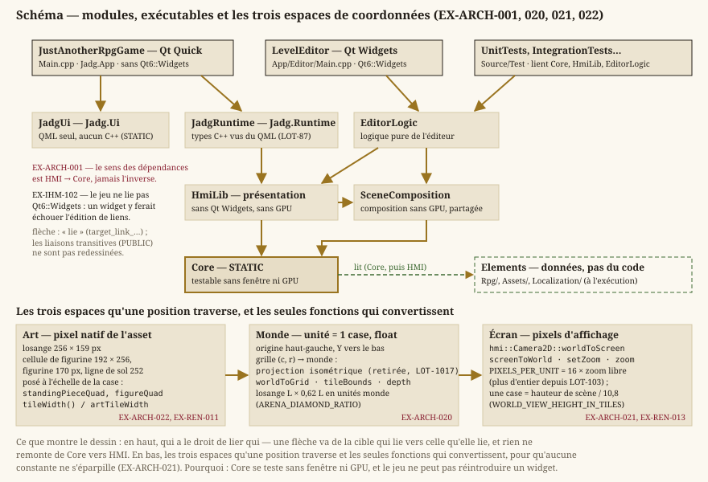

Architecture (décisions dimensionnantes)
Statut : livré. Décisions structurantes (sens des dépendances, ECS, frontière simulation ↔ rendu, deux exécutables). Transverse à toutes les specs.
1. Modules & dépendances


Core(simulation, indépendant du système),HMI(rendu, entrées, présentation, éditeur),UietApp(écrans et points d'entrée),Elements(données et assets),Test.- EX-ARCH-001 — Le sens des dépendances est
HMI → Core, jamais l'inverse.Coreest testable sans fenêtre ni GPU.
2. Modèle d'entités : ECS
Choix retenu : ECS, hébergé dans Core, pour les objets posés sur une carte (entités de carte, core::spawnMapEntities).
- EX-ARCH-010 — La simulation repose sur un ECS (entités = identifiants, composants = données pures, systèmes = logique).
- EX-ARCH-011 — Les composants ne contiennent pas de logique ; la logique vit dans les systèmes.
- EX-ARCH-012 — Le rendu (
HMI) lit les composants (ex.Transform,Sprite) sans les muter. - Composants :
Transform(position/échelle/rotation en unités monde),Sprite,Animation,Interactable,RpgActor.
3. Coordonnées & unités — trois espaces distincts
| Espace | Unité | Rôle |
|---|---|---|
| Monde | tuile (float) | Position logique des objets, indépendante de l'écran |
| Art / texel | pixel natif de l'asset | Résolution du pixel art |
| Écran | pixel d'affichage | Dépend de la résolution / du zoom |
- EX-ARCH-020 — Unité monde = 1 tuile, positions en float, origine haut-gauche, axe Y vers le bas.
- EX-ARCH-021 — Un facteur pixels-par-unité (16) régit la conversion monde → écran ; les conversions sont centralisées (pas de constantes éparpillées).
- EX-ARCH-022 — Rendu fidèle à la nature de l'asset : l'échantillonnage se choisit par asset — nearest pour une image dont les pixels sont signifiants (les pièces de scène), interpolé pour une illustration peinte, qui n'a pas de grille à préserver et que le plus proche voisin rendrait crénelée. Le zoom caméra n'est plus contraint aux facteurs entiers : cette contrainte n'a jamais servi qu'à ne pas casser la grille du pixel art. > Précisée au
LOT-101. La scène est peinte, et non plus en pixel art : plus aucun asset du > jeu n'a de pixels signifiants. L'art de scène s'échantillonne donc en bilinéaire avec > mipmaps, alpha prémultiplié (EX-VIS-008) — le plus proche voisin le ferait scintiller dès > qu'il est réduit, ce qu'il est toujours — et les images de la charte v2 restent interpolées > (EX-VIS-009). Le zoom de la caméra devient libre (EX-REN-013). Mise en œuvre au >LOT-103: toute texture est prémultipliée au chargement ; celle d'un fichier — l'art peint — > reçoit ses mipmaps et s'échantillonne en bilinéaire, et seule une image engendrée (damier de > repli, aplat, marqueur) reste au plus proche (hmi::TextureFiltering). > Précisée auLOT-92(caduque) — la scène y était du pixel art échantillonné au plus > proche voisin. > Refondue auLOT-66. Elle imposait « rendu pixel art : nearest-neighbor, zoom de préférence en facteurs entiers », et c'est d'elle que dix autres exigences tenaient leur justification — la racine devait tomber la première, sans quoi chaque feuille aurait pu citer une règle abandonnée sans que rien ne le signale.
4. Frontière simulation ↔ rendu
- EX-ARCH-030 —
Coremet à jour la simulation à pas de temps fixe ;HMIproduit l'image en lisant l'état.
5. Mathématiques dans Core
- EX-ARCH-040 —
Coredéfinit ses propres types mathématiques (Vector2,Rect, …), sans dépendance graphique. La conversion versDirectXMatha lieu uniquement à la frontière de rendu (HMI).
6. Abstraction de rendu
- EX-ARCH-050 — Le rendu est un pipeline mince (lot de sprites) au-dessus de QRhi, qui retient Direct3D 11 sous Windows (
EX-REN-002). Le projet n'ajoute aucune couche d'abstraction graphique propre.
7. Modèle de threading
- EX-ARCH-060 — Boucle mono-thread au MVP. Un éventuel chargement asynchrone sera isolé plus tard, sans remettre en cause la simulation déterministe.
8. Communication inter-systèmes
- EX-ARCH-070 — Communication par appels directs / observateur simple. Pas de bus d'événements tant que le couplage reste faible (réévalué si nécessaire).
9. Gestion des ressources
- EX-ARCH-080 — Les ressources sont gérées par nom logique, avec chargement à la demande et mise en cache. La gestion vit du côté qui possède la ressource : les textures relèvent de
HMI(décodage d'image et création sur QRhi), carCorene doit connaître aucune ressource graphique (EX-NFR-010,EX-ARCH-010) ; les cartes et les catalogues restent des données deCore, chargées et validées par leur propre chargeur (EX-LVL-004). Il n'existe donc pas de gestionnaire de ressources unique dansCore— la formulation initiale, antérieure à la séparationCore/HMItelle qu'elle est aujourd'hui appliquée, l'aurait obligé à dépendre de la présentation.
Exigences retirées
Ancres conservées, jamais renumérotées : les lots livrés s'y réfèrent.
- EX-ARCH-002 (retirée au
LOT-88) — ordre des passes d'un pas fixe porté par un mode de jeu : l'orchestrateur à passes est retiré ; chaque session — exploration, arène — porte son propre ordre. - EX-ARCH-031 (retirée au
LOT-88) — facteur d'interpolation fourni au rendu : aucun rendu n'interpole plus entre deux pas. - EX-ARCH-090 (retirée au
LOT-88) — état « Éditeur » parmi les états du jeu : l'éditeur est un exécutable distinct (EX-EDIT-030). - EX-ARCH-100 (retirée au
LOT-88) — décors en entités de la simulation.
Traçabilité
Ces décisions conditionnent tous les lots. Exigences non fonctionnelles associées : exigences-non-fonctionnelles.md.
EX-ARCH-001, EX-ARCH-060 et EX-ARCH-070 sont des invariants transverses : chaque lot les respecte par construction (sens des dépendances, boucle mono-thread, communication directe) sans avoir besoin de les citer nommément dans son « Exigences couvertes ». Qu'ils n'apparaissent dans aucun lot n'est donc pas une exigence orpheline.
Séparation de la conception et du code (
LOT-86) : l'IHM se scinde en deux applications. Le jeu passe à Qt Quick (JustAnotherRpgGame,QGuiApplication, ne lie pasQt6::Widgets) ; l'éditeur de cartes reste en Qt Widgets dans son propre binaire (LevelEditor). Une couche de présentation (Source/HMI/Presentation) transforme l'état du jeu en données affichables sans rien dessiner, et les écrans vivent en QML dansSource/Ui— que Qt Design Studio ouvre et réenregistre.EX-ARCH-001(sens des dépendances),EX-ARCH-030(frontière simulation ↔ rendu) etEX-ARCH-050(rendu au travers de QRhi) sont inchangées : le portage déplace l'hôte du rendu (QRhiWidget→QQuickRhiItem), jamais sa cible. Voirinterface-ihm.md§11 (EX-IHM-100→EX-IHM-105) et Concevoir les écrans dans Qt Design Studio.